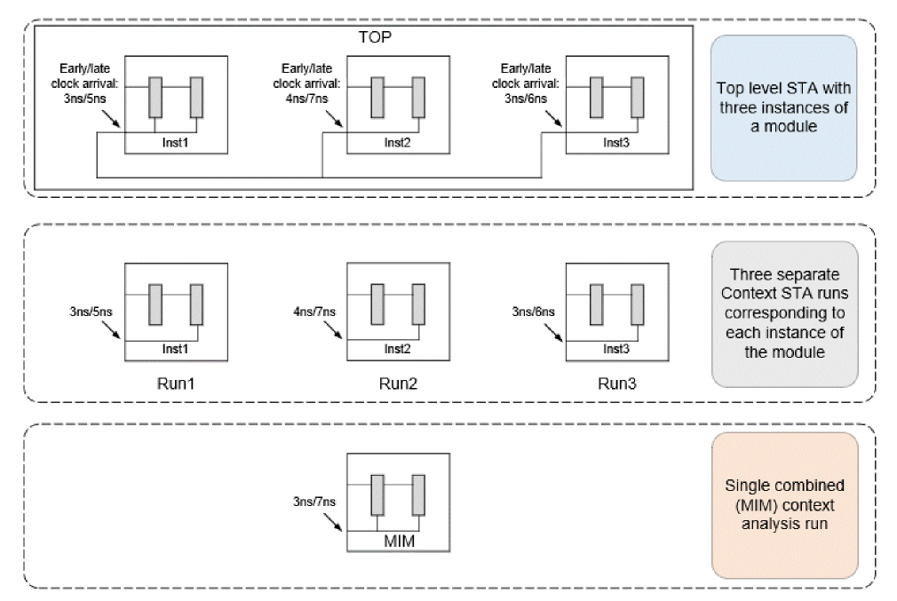
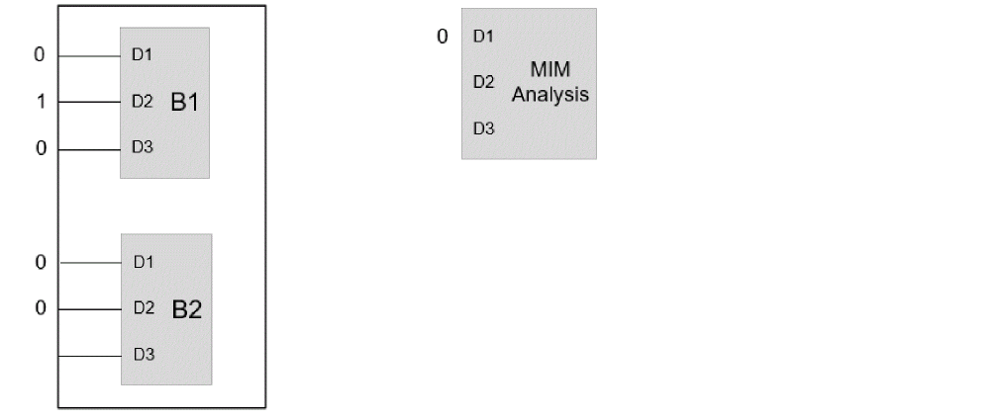

MIM Context Analysis
Tempus supports Context analysis of multiple instances of blocks in a single STA run. This is referred to as MIM (multi-instantiated module) context analysis. The MIM context analysis is more efficient than performing multiple STA runs corresponding to each instance of a block.
This is illustrated in the figure below:
Figure -126 MIM Context Analysis Illustration

The MIM Context analysis will use worst-cased latency across all the instances of the block. For example, in the above figure, early latencies for Inst1, Inst2, and Inst3 of the block module are 3, 4, and 3ns respectively. Similarly, the late latencies for each of the instances are 5, 6, and 7ns respectively. MIM analysis will use the worst early (3ns) and worst late (7ns) latencies.
The following boundary constraints are worst-cased in MIM Context analysis:
The top level constants propagating to data ports will only be modeled in MIM context analysis, if the constant on the port is consistent across all the instances. In case of difference in top level constants across instances, the constant will not be modeled. This is illustrated in the figure below.

Since both B1 and B2 instances of module B have the same constant 0 on port D1, this will be modeled in MIM context analysis. However, on port D2, since B1 has constant value 1 and B2 has constant value 0, hence this is not modeled in MIM context analysis. Similarly, since only B1 has a constant on port D3 and B2 does not have a constant, no constant gets modeled on D3 port in MIM context analysis.
The MIM context analysis for interface paths is enabled by the timing_context_enable_mim_interface_support attribute. When set to true (default), the input and output interface paths are separately reported for each of the MIM instances.
Return to top